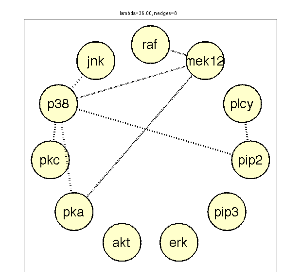

Learn GGM structure using graphical lasso on flow cytometry data
HTF 2e p637
% This file is from pmtk3.googlecode.com loadData('sachsCtsHtf'); % 7466 x 11 lambdas = 36; %[36 27 7 0]; %lambdas = [logspace(5,0,5) 0]; S = cov(X)/1000; % same as http://www-stat.stanford.edu/~tibs/ElemStatLearn/datasets/sachs.info debug = false; L = length(lambdas); nedges = zeros(L, 1); precMat = cell(L, 1); for i=1:L lambda = lambdas(i); [P] = ggmLassoHtf(S, lambda); A = precmatToAdjmat(P, 1e-9); nedges(i) = sum(A(:))/2; ttl=sprintf('lambda=%3.2f, nedges=%d', lambda, nedges(i)); g = drawNetwork('-adjMat', A, '-undirected', true, ... '-nodeLabels', labels, '-layout', Circlelayout()); title(ttl) %figure; imagesc(P); colorbar; title(ttl); precMat{i} = P; printPmtkFigure(sprintf('glassoSachs%d.pdf',lambda)); if debug tol = 1e-2; [PR] = ggmLassoR(S, lambda); assert(max(P(:)- PR(:)) < tol); [PM] = ggmLassoCoordDescQP(S, lambda); assert(max(P(:)- PM(:)) < tol); end end